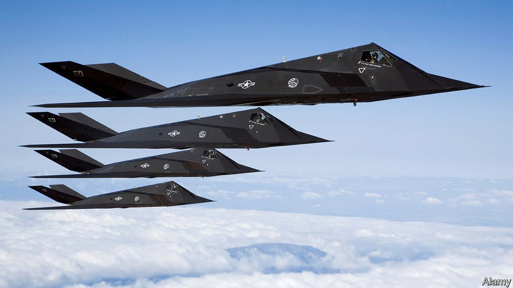

2021-06-15T16:34:46+00:00
创造未来
越来越多的政府希望克隆美国的DARPA
除非它们秉承DARPA的精神内核，否则不会成功
用信使RNA制造疫苗的想法未经验证。但如果有效，这种方法会革新医学，尤其是因为它可以保护人们免受传染病和生物武器的威胁。所以在2013年，美国国防部高级研究计划局（Defence Advanced Research Projects Agency，以下简称DARPA）赌了一把。它向一家新成立的小公司莫德纳（Moderna）拨款2500万美元来做相关研发。八年过去了，莫德纳的mRNA新冠疫苗如今已生产了超过1.75亿剂，在DARPA至少有部分功劳的创新名单上又添了一项——这个名单上已经有气象卫星、GPS、无人机、隐形技术、语音接口、个人计算机和互联网。
DARPA这个机构塑造了现代世界，它的成功引发了各种效仿。在美国，在这一国防部门的高级研究计划局（ARPA）最先成立之后，国土安全、情报和能源部门的ARPA也相继成立。总统拜登已要求国会拨款65亿美元成立医疗卫生部门的ARPA，他誓言这将“如我们预期的那样终结癌症”。拜登政府还计划成立应对气候变化的ARPA。德国近年来设立了两个这样的机构：一个是民用领域的联邦颠覆性创新局（Federal Agency for Disruptive Innovation，SPRIN-D），另一个是军事领域的网络安全创新局（Cybersecurity Innovation Agency）。日本的同类机构名为探月类研发项目（Moonshot R&D）。在英国，有关设立高级研究和发明局（Advanced Research and Invention Agency，通常认为是英国版的ARPA）的法案正在议会审议。
创新机构需要支持
在经过40年的停顿期后，发达国家的政府现在纷纷开始在研发上投入更多资金。设立一个机构来创造未来（并由此催生出大量新产业）的想法显得很诱人，而且DARPA的成功表明这并非幻想。在许多国家，拨款体系受困于官僚网络，人们对此深感不满，希望使用DARPA模式可以避开这种情况。但正如一些人已经发现的那样（其他人很快也会发现），复制DARPA模式不是照搬名字就行了，还需要致力于遵循让原版DARPA大获成功的原则，而这些原则往往会让政客们不安。
从表面上看，DARPA的做法直截了当，那就是对大有益处的项目大胆押下重注，只要有少数取得成功，整体上就是成功的。正如美国能源部下属ARPA（ARPA-E）的首任局长阿伦·玛尊达（Arun Majumdar）所说：“如果每个项目都挺成功，那说明你还不够努力。”当前（非机密的）DARPA的项目包括模仿昆虫的神经系统以减少人工智能所需的计算，以及在敌人用基因编辑技术发动攻击时保护士兵。
结果是DARPA与一般的研发机构迥乎不同。其他机构大多注重基础研究，而DARPA要造出实物。其他机构大多要做同行评审，并使用精心挑选的标准来衡量进展，但DARPA彻底摆脱了官僚主义（1965年的一次谈话促使该机构为第一个跨国计算机网络提供了100万美元，那便是互联网的前身，而那次谈话只花了15分钟）。DARPA外包了所有工作。它只有一个老板、一小批部门主管和不到100名项目经理。这些经理签的都是短期的固定期限合同，工作方式类似于风险投资家，只不过他们的目标是取得具体成果，而不是个人收益。
新成立的各家ARPA面临的第一项挑战是为这类实验争取到所需的自主空间。SPRIN-D的历程显示了这有多难。成立这个机构的设想得到了德国内阁的批准，“结果联邦审计署（Federal Court of Auditors）来了。”SPRIN-D的首席合作官芭芭拉·迪尔（Barbara Diehl）叹息道。审计官员提出建议后，该机构就丧失了在公共部门采购规定和薪酬标准上的豁免权，限制了它能聘用谁以及可以承担什么风险。迪尔说，现有政府各部通过SRPIN-D的董事会施加影响，不让它大刀阔斧地行事。英国首相约翰逊的前顾问多米尼克·卡明斯（Dominic Cummings）当初出任顾问时提出的一个条件是设立一个英国版的ARPA。他曾表示，创建这个机构的相关立法中包含了由政府部委施加监督的规定，这令他感到担忧。
如果不能免于政治干预，前沿科研人员的冒险本能就会被抑制。德国网络安全创新局的行政和研究主管最近就因为对政治干预忍无可忍而辞职。美国国土安全部的ARPA于2002年成立，但一直受该部内部的权力斗争牵制而难有作为。“它从来没有独立决策权，从来没有独立预算。”一位观察人士说。拜登政府的医疗ARPA（ARPA-H）是应该自成一体还是隶属于美国国立卫生研究院（NIH）仍存在争议。后一种方案在立法上难度较小，但可能会损害ARPA-H的独立性。
进展报告
DARPA在2020年的预算为36亿美元，仅相当于NIH预算的8%。如果一切按计划进行，ARPA-H将会有类似的预算，但其他ARPA都不会获得这么多资金（ARPA-E去年得到的拨款为4.25亿美元，大致相当于DARPA下属六个部门中一个的水平）。由于DARPA模式的成功在于广撒网、多下注，希望总有几个项目能成功，资金少自然意味着能下注的项目也少了，这就降低了成功的机会，从而减少了在政治上持续获得支持的机会。在很难衡量进展的情况下尤其如此。正如麻省理工学院的皮埃尔·阿祖莱（Pierre Azoulay）及其同事在一篇论文中指出的那样：“不可能用政治决策的时间框架准确衡量千里挑一的创意的进展，更不用说那些百万里挑一的。”
这些新设立的ARPA还必须研究出如何让它们的创新成果走出实验室。DARPA与国防部关系密切，国防部是其研究成果的客户。但其他机构缺乏这样的渠道。马萨诸塞大学阿默斯特分校（University of Massachusetts, Amherst）的安娜·戈德斯坦（Anna Goldstein）及其同事的研究发现，尽管由ARPA-E资助的新“清洁技术”公司取得的专利比其他公司多，但它们并没有因此而更可能获得风险投资、被大公司收购或在公开市场上市。至少到目前为止，该机构的创新成果一直难以转化为现实应用。
ARPA-E于2009年成立时，对它寄予的希望是风险投资家会选中它的创新成果。事实证明他们不太感兴趣。与软件这种最受风投青睐的投资对象相比，能源技术推向市场所需的时间要长得多。因此，ARPA-E对DARPA模式做了微调，增加了一个“技术到市场”团队，指引研发项目穿越产业丛林。去年，ARPA-E开始对那些曾经赢得其资助、寻求进一步发展的潜力股公司提供最高15万美元的科研资金。麻省理工学院的科学政策专家威廉·邦维利安（William Bonvillian）认为这其中缺少的一个要素就是时间：“我们在1969年发明了互联网，直到91、92年才大规模应用它。我们得习惯这中间需要一些时间。”
ARPA-H可能面临类似的困难。成立该机构是因为人们认为NIH过于保守：如今生命科学的众多突破来自生物学、化学和计算机科学的交叉，NIH却仅专注于生物学研究。滑铁卢大学的米科·帕克艾伦（Mikko Packalen）和斯坦福大学的杰伊·巴特查里亚（Jay Bhattacharya）给出的证据支持了这一点，他们发现NIH对基于新技术进步的研究的资助减少了。不过，ARPA-H的另一个目标是资助罕见病疗法的研究，由于这方面的研究盈利机会有限，私营部门一直敬而远之。与ARPA-E一样，缺乏商业回报可能会让创新难以转化为实际应用。
曾在奥巴马政府任职的迈克尔·斯特宾斯（Michael Stebbins）是ARPA-H的支持者，他希望可以请到DARPA的人来领导这个新机构。复制DARPA自由行事的文化挑战巨大——它自己在这件事上也曾多次失败。它在上世纪60年代末到70年代初期间无所作为，而许多人认为近几十年来它当年的雄心已被削弱，这大大减少了失败，但同样减少了成功。
DARPA专注于国防也有一种天然优势。就算造不出可怕的武器，美国领导人可以自我安慰说对手也造不出来。找不到治愈癌症的办法就没法这么安心了。但这不足以让美国、英国、德国和日本的政客作罢。许多人从DARPA学到的经验是，困难本身不是逃避的理由。它甚至可能正是行动的原因。
2021-06-15T16:34:46+00:00
Inventing the future
A growing number of governments hope to clone America’s DARPA
They will not succeed unless they adopt the spirit which motivates it
USING MESSENGER RNA to make vaccines was an unproven idea. But if it worked, the technique would revolutionise medicine, not least by providing protection against infectious diseases and biological weapons. So in 2013 America’s Defence Advanced Research Projects Agency (DARPA) gambled. It awarded a small, new firm called Moderna $25m to develop the idea. Eight years, and more than 175m doses later, Moderna’s covid-19 vaccine sits alongside weather satellites, GPS, drones, stealth technology, voice interfaces, the personal computer and the internet on the list of innovations for which DARPA can claim at least partial credit.
It is the agency that shaped the modern world, and this success has spurred imitators. In America there are ARPAs for homeland security, intelligence and energy, as well as the original defence one. President Joe Biden has asked Congress for $6.5bn to set up a health version, which will, the president vows, “end cancer as we know it”. His administration also has plans for another, to tackle climate change. Germany has recently established two such agencies: one civilian (the Federal Agency for Disruptive Innovation, or SPRIN-D) and another military (the Cybersecurity Innovation Agency). Japan’s interpretation is called Moonshot R&D. In Britain a bill for an Advanced Research and Invention Agency—often referred to as UK ARPA—is making its way through Parliament.
An agency needs agency
As governments across the rich world begin, after a four-decade lull, to spend more on research and development, the idea of an agency to invent the future (and, in so doing, generate vast industries) is alluring and, the success of DARPA suggests, no mere fantasy. In many countries there is displeasure with the web of bureaucracy that entangles funding systems, and hope that the DARPA model can provide a way of getting around it. But as some have discovered, and others soon will, copying DARPA requires more than just copying the name. It also needs commitment to the principles which made the original agency so successful—principles that are often uncomfortable for politicians.
On paper, the approach is straightforward. Take enormous, reckless gambles on things so beneficial that only a handful need work to make the whole venture a success. As Arun Majumdar, founding director of ARPA-E, America’s energy agency, puts it: “If every project is succeeding, you’re not trying hard enough.” Current (unclassified) DARPA projects include mimicking insects’ nervous systems in order to reduce the computation required for artificial intelligence and working out how to protect soldiers from the enemy’s use of genome-editing technologies.
The result is a mirror image of normal R&D agencies. Whereas most focus on basic research, DARPA builds things. Whereas most use peer review and carefully selected measurements of progress, DARPA strips bureaucracy to the bones (the conversation in 1965 which led the agency to give out $1m for the first cross-country computer network, a forerunner to the internet, took just 15 minutes). All work is contracted out. DARPA has a boss, a small number of office directors and fewer than 100 programme managers, hired on fixed short-term contracts, who act in a manner akin to venture capitalists, albeit with the aim of generating specific outcomes rather than private returns.
The first challenge for the new ARPAs is to secure the breathing space required for such experimentation. SPRIN-D illustrates how difficult this can be. The concept was approved by Germany’s cabinet—“and then the Federal Court of Auditors came along,” sighs Barbara Diehl, SPRIN-D’s chief partnership officer. After the auditors issued their recommendations, the agency lost its exemption from standard public-sector procurement rules and pay scales, restricting who it could hire and the sorts of risks it could take. Existing government ministries exert influence through the agency’s board, stymying radicalism, says Ms Diehl. Dominic Cummings, a former aide to Boris Johnson, Britain’s prime minister, who demanded a British agency as a condition of his employment, has said he is concerned by the provisions for ministerial oversight in the legislation creating it.
Without freedom from political interference, the risk-taking instincts of those at the cutting edge are curbed. The administrative and research directors of Germany’s Cybersecurity Innovation Agency recently quit, frustrated by political interference. In America the homeland-security ARPA was established in 2002, but has been hamstrung by power struggles in the department that gave it its name. “It has never been allowed to make independent decisions, it has never been allowed an independent budget,” says an observer. There is a debate about whether the Biden administration’s health ARPA (ARPA-H) ought to stand alone, or be part of the National Institutes of Health (NIH). The latter would be less of a legislative challenge, but may infringe its independence.
Progress report
DARPA’s budget in 2020 was $3.6bn, equivalent to just 8% of the NIH’s. If all goes to plan, ARPA-H will be on a similar scale, but none of the others receives such funding (ARPA-E got $425m last year, roughly as much as one of DARPA’s six offices). Since the model works by making lots of bets in the hope that a few will come off, stingier funding means fewer wagers, which reduces the chance of success and thus of continued political support. This is especially true given the difficulty of measuring progress. As a paper by Pierre Azoulay of the Massachusetts Institute of Technology (MIT) and his colleagues notes: “It is impossible to accurately measure the incidence of one-in-a-thousand ideas, much less one-in-a-million ideas, on a timescale relevant to political decision-making.”
The new agencies must also work out how to get their innovations out of the lab. There is a close relationship between DARPA and the Department of Defence, which is a customer for its work. But other agencies lack such a pipeline. Research by Anna Goldstein at the University of Massachusetts, Amherst, and her colleagues finds that, although new “cleantech” companies sponsored by ARPA-E produce more patents than others, they are not more likely to raise venture capital, be acquired by larger firms or list on public markets. So far, at least, the agency’s innovations have struggled to leap into the real world.
When ARPA-E began in 2009 the hope was that venture capitalists would pick up innovations emerging from it. They have proved reluctant. Energy technologies take far longer to reach the market than venture capital’s favourite investment, software. ARPA-E has thus tweaked the DARPA model to add a “tech-to-market” team, to guide projects through the industrial jungle. Last year it began handing out grants of up to $150,000 to promising previous award-winners seeking to grow. William Bonvillian, a science-policy expert at MIT, suspects one missing ingredient is simply time: “We created the internet in ’69. It didn’t scale up until ’91 or ’92. So we’ve just got to get used to it taking a while.”
ARPA-H may face similar difficulties. It is based on the idea that the NIH is too conservative, focusing on biology at a time when many life-science breakthroughs happen where biology, chemistry and computer science meet. Mikko Packalen and Jay Bhattacharya, of Waterloo and Stanford universities respectively, provide supportive evidence, finding that the NIH’s funding of work building on new advances has declined. ARPA-H’s other goal, though, is to pump money into treatments for rare diseases, eschewed by the private sector because of limited moneymaking opportunities. As with ARPA-E, this lack of commercial interest may make the transition from innovation to the real world tricky.
Michael Stebbins, who was an official in Barack Obama’s administration, and is an advocate for ARPA-H, hopes that someone from DARPA can be recruited to lead the new agency. Replicating DARPA’s freewheeling culture is such a challenging task that there have been times when DARPA itself has failed. It went through a fallow period in the late 1960s and early 1970s, and many feel its ambitions have been trimmed back in recent decades—minimising failures, but also successes.
The defence focus also has an inbuilt advantage. By failing to build a terrible weapon, American leaders can reassure themselves that their adversaries won’t either. There is no such reassurance in failing to cure cancer. But that has not been enough to dissuade politicians in America, Britain, Germany and Japan. The lesson many have learnt from DARPA is that mere difficulty is no reason to avoid something. It may even be a reason to do it. ■
2021-06-15T16:34:46+00:00
創造未來
越來越多的政府希望克隆美國的DARPA
除非它們秉承DARPA的精神內核，否則不會成功
用信使RNA製造疫苗的想法未經驗證。但如果有效，這種方法會革新醫學，尤其是因為它可以保護人們免受傳染病和生物武器的威脅。所以在2013年，美國國防部高級研究計劃局（Defence Advanced Research Projects Agency，以下簡稱DARPA）賭了一把。它向一家新成立的小公司莫德納（Moderna）撥款2500萬美元來做相關研發。八年過去了，莫德納的mRNA新冠疫苗如今已生產了超過1.75億劑，在DARPA至少有部分功勞的創新名單上又添了一項——這個名單上已經有氣象衛星、GPS、無人機、隱形技術、語音接口、個人計算機和互聯網。
DARPA這個機構塑造了現代世界，它的成功引發了各種效仿。在美國，在這一國防部門的高級研究計劃局（ARPA）最先成立之後，國土安全、情報和能源部門的ARPA也相繼成立。總統拜登已要求國會撥款65億美元成立醫療衛生部門的ARPA，他誓言這將“如我們預期的那樣終結癌症”。拜登政府還計劃成立應對氣候變化的ARPA。德國近年來設立了兩個這樣的機構：一個是民用領域的聯邦顛覆性創新局（Federal Agency for Disruptive Innovation，SPRIN-D），另一個是軍事領域的網絡安全創新局（Cybersecurity Innovation Agency）。日本的同類機構名為探月類研發項目（Moonshot R&D）。在英國，有關設立高級研究和發明局（Advanced Research and Invention Agency，通常認為是英國版的ARPA）的法案正在議會審議。
創新機構需要支持
在經過40年的停頓期後，發達國家的政府現在紛紛開始在研發上投入更多資金。設立一個機構來創造未來（並由此催生出大量新產業）的想法顯得很誘人，而且DARPA的成功表明這並非幻想。在許多國家，撥款體系受困於官僚網絡，人們對此深感不滿，希望使用DARPA模式可以避開這種情況。但正如一些人已經發現的那樣（其他人很快也會發現），複製DARPA模式不是照搬名字就行了，還需要致力於遵循讓原版DARPA大獲成功的原則，而這些原則往往會讓政客們不安。
從表面上看，DARPA的做法直截了當，那就是對大有益處的項目大膽押下重注，只要有少數取得成功，整體上就是成功的。正如美國能源部下屬ARPA（ARPA-E）的首任局長阿倫·瑪尊達（Arun Majumdar）所說：“如果每個項目都挺成功，那說明你還不夠努力。”當前（非機密的）DARPA的項目包括模仿昆蟲的神經系統以減少人工智能所需的計算，以及在敵人用基因編輯技術發動攻擊時保護士兵。
結果是DARPA與一般的研發機構迥乎不同。其他機構大多注重基礎研究，而DARPA要造出實物。其他機構大多要做同行評審，並使用精心挑選的標準來衡量進展，但DARPA徹底擺脫了官僚主義（1965年的一次談話促使該機構為第一個跨國計算機網絡提供了100萬美元，那便是互聯網的前身，而那次談話只花了15分鐘）。DARPA外包了所有工作。它只有一個老闆、一小批部門主管和不到100名項目經理。這些經理簽的都是短期的固定期限合同，工作方式類似於風險投資家，只不過他們的目標是取得具體成果，而不是個人收益。
新成立的各家ARPA面臨的第一項挑戰是為這類實驗爭取到所需的自主空間。SPRIN-D的歷程顯示了這有多難。成立這個機構的設想得到了德國內閣的批准，“結果聯邦審計署（Federal Court of Auditors）來了。”SPRIN-D的首席合作官芭芭拉·迪爾（Barbara Diehl）嘆息道。審計官員提出建議後，該機構就喪失了在公共部門採購規定和薪酬標準上的豁免權，限制了它能聘用誰以及可以承擔什麼風險。迪爾說，現有政府各部通過SRPIN-D的董事會施加影響，不讓它大刀闊斧地行事。英國首相約翰遜的前顧問多米尼克·卡明斯（Dominic Cummings）當初出任顧問時提出的一個條件是設立一個英國版的ARPA。他曾表示，創建這個機構的相關立法中包含了由政府部委施加監督的規定，這令他感到擔憂。
如果不能免於政治干預，前沿科研人員的冒險本能就會被抑制。德國網絡安全創新局的行政和研究主管最近就因為對政治干預忍無可忍而辭職。美國國土安全部的ARPA於2002年成立，但一直受該部內部的權力鬥爭牽制而難有作為。“它從來沒有獨立決策權，從來沒有獨立預算。”一位觀察人士說。拜登政府的醫療ARPA（ARPA-H）是應該自成一體還是隸屬於美國國立衛生研究院（NIH）仍存在爭議。後一種方案在立法上難度較小，但可能會損害ARPA-H的獨立性。
進展報告
DARPA在2020年的預算為36億美元，僅相當於NIH預算的8%。如果一切按計劃進行，ARPA-H將會有類似的預算，但其他ARPA都不會獲得這麼多資金（ARPA-E去年得到的撥款為4.25億美元，大致相當於DARPA下屬六個部門中一個的水平）。由於DARPA模式的成功在於廣撒網、多下注，希望總有幾個項目能成功，資金少自然意味着能下注的項目也少了，這就降低了成功的機會，從而減少了在政治上持續獲得支持的機會。在很難衡量進展的情況下尤其如此。正如麻省理工學院的皮埃爾·阿祖萊（Pierre Azoulay）及其同事在一篇論文中指出的那樣：“不可能用政治決策的時間框架準確衡量千里挑一的創意的進展，更不用說那些百萬里挑一的。”
這些新設立的ARPA還必須研究出如何讓它們的創新成果走出實驗室。DARPA與國防部關係密切，國防部是其研究成果的客戶。但其他機構缺乏這樣的渠道。馬薩諸塞大學阿默斯特分校（University of Massachusetts, Amherst）的安娜·戈德斯坦（Anna Goldstein）及其同事的研究發現，儘管由ARPA-E資助的新“清潔技術”公司取得的專利比其他公司多，但它們並沒有因此而更可能獲得風險投資、被大公司收購或在公開市場上市。至少到目前為止，該機構的創新成果一直難以轉化為現實應用。
ARPA-E於2009年成立時，對它寄予的希望是風險投資家會選中它的創新成果。事實證明他們不太感興趣。與軟件這種最受風投青睞的投資對象相比，能源技術推向市場所需的時間要長得多。因此，ARPA-E對DARPA模式做了微調，增加了一個“技術到市場”團隊，指引研發項目穿越產業叢林。去年，ARPA-E開始對那些曾經贏得其資助、尋求進一步發展的潛力股公司提供最高15萬美元的科研資金。麻省理工學院的科學政策專家威廉·邦維利安（William Bonvillian）認為這其中缺少的一個要素就是時間：“我們在1969年發明了互聯網，直到91、92年才大規模應用它。我們得習慣這中間需要一些時間。”
ARPA-H可能面臨類似的困難。成立該機構是因為人們認為NIH過於保守：如今生命科學的眾多突破來自生物學、化學和計算機科學的交叉，NIH卻僅專註於生物學研究。滑鐵盧大學的米科·帕克艾倫（Mikko Packalen）和斯坦福大學的傑伊·巴特查里亞（Jay Bhattacharya）給出的證據支持了這一點，他們發現NIH對基於新技術進步的研究的資助減少了。不過，ARPA-H的另一個目標是資助罕見病療法的研究，由於這方面的研究盈利機會有限，私營部門一直敬而遠之。與ARPA-E一樣，缺乏商業回報可能會讓創新難以轉化為實際應用。
曾在奧巴馬政府任職的邁克爾·斯特賓斯（Michael Stebbins）是ARPA-H的支持者，他希望可以請到DARPA的人來領導這個新機構。複製DARPA自由行事的文化挑戰巨大——它自己在這件事上也曾多次失敗。它在上世紀60年代末到70年代初期間無所作為，而許多人認為近幾十年來它當年的雄心已被削弱，這大大減少了失敗，但同樣減少了成功。
DARPA專註於國防也有一種天然優勢。就算造不出可怕的武器，美國領導人可以自我安慰說對手也造不出來。找不到治癒癌症的辦法就沒法這麼安心了。但這不足以讓美國、英國、德國和日本的政客作罷。許多人從DARPA學到的經驗是，困難本身不是逃避的理由。它甚至可能正是行動的原因。